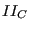
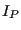

Keyword type: step
This procedure is used to perform a coupled thermomechanical analysis. A thermomechanical analysis is a nonlinear calculation in which the displacements and temperatures are simultaneously solved. In this way the reciprocal action of the temperature on the displacements and the displacements on the temperature can be taken into account. At the present state, the influence of the temperature on the displacements is calculated through the thermal expansion, the effect of the displacements on the temperature is limited to radiation effects. In addition, the influence of the network fluid pressure on the deformation of a structure and the influence of the structural deformation on the network fluid mass flow can be considered. Other heating effects, e.g. due to plasticity, or not yet taken into account.
The coupling is not done on matrix level, i.e. the left hand side matrix of the equation system does not contain any coupling terms. The coupling is rather done by an update of the boundary conditions after each iteration. Indeed, the calculation of an increment usually requires several iterations to obtain convergence. By including the thermomechanical interaction after each iteration it is automatically taken into account at convergence of the increment.
There are eight optional parameters: SOLVER, DIRECT, ALPHA, STEADY STATE, DELTMX, TIME RESET, TOTAL TIME AT START and COMPRESSIBLE.
SOLVER determines the package used to solve the ensuing system of equations. The following solvers can be selected:
Default is the first solver which has been installed of the following list: SGI, PaStiX, PARDISO, SPOOLES and TAUCS. If none is installed, the default is the iterative solver, which comes with the CalculiX package.
The SGI solver should by now be considered as outdated.SPOOLES is very fast, but has no out-of-core capability: the size of systems you can solve is limited by your RAM memory. With 32GB of RAM you can solve up to 1,000,000 equations. TAUCS is also good, but my experience is limited to the  decomposition, which only applies to positive definite systems. It has an out-of-core capability and also offers a
decomposition, which only applies to positive definite systems. It has an out-of-core capability and also offers a  decomposition, however, I was not able to run either of them so far. PARDISO is the Intel proprietary solver and is about a factor of two faster than SPOOLES. The most recent solver we tried is the freeware solver PaStiX from INRIA. It is really fast and can use the GPU. For large problems and a high end Nvidea graphical card (32 GB of RAM) we got an acceleration of a factor between 3 and 8 compared to PARDISO. We modified PaStiX for this, therefore you have to download PaStiX from our website and compile it for your system. This can be slightly tricky, however, it is worth it!
decomposition, however, I was not able to run either of them so far. PARDISO is the Intel proprietary solver and is about a factor of two faster than SPOOLES. The most recent solver we tried is the freeware solver PaStiX from INRIA. It is really fast and can use the GPU. For large problems and a high end Nvidea graphical card (32 GB of RAM) we got an acceleration of a factor between 3 and 8 compared to PARDISO. We modified PaStiX for this, therefore you have to download PaStiX from our website and compile it for your system. This can be slightly tricky, however, it is worth it!
What about the iterative solver? If SOLVER=ITERATIVE SCALING is selected, the pre-conditioning is limited to a scaling of the diagonal terms, SOLVER=ITERATIVE CHOLESKY triggers Incomplete Cholesky pre-conditioning. Cholesky pre-conditioning leads to a better convergence and maybe to shorter execution times, however, it requires additional storage roughly corresponding to the non-zeros in the matrix. If you are short of memory, diagonal scaling might be your last resort. The iterative methods perform well for truly three-dimensional structures. For instance, calculations for a hemisphere were about nine times faster with the ITERATIVE SCALING solver, and three times faster with the ITERATIVE CHOLESKY solver than with SPOOLES. For two-dimensional structures such as plates or shells, the performance might break down drastically and convergence often requires the use of Cholesky pre-conditioning. SPOOLES (and any of the other direct solvers) performs well in most situations with emphasis on slender structures but requires much more storage than the iterative solver.
The parameter DIRECT indicates that automatic incrementation should be switched off. The increments will have the fixed length specified by the user on the second line.
The parameter ALPHA takes an argument between -1/3 and 0. It controls the dissipation of the high frequency response: lower numbers lead to increased numerical damping ([57]). The default value is -0.05.
The parameter STEADY STATE indicates that only the steady state should be calculated. If this parameter is absent, the calculation is assumed to be time dependent and a transient analysis is performed. For a transient analysis the specific heat of the materials involved must be provided. In a steady state analysis any loading is applied using linear ramping, in a transient analysis step loading is applied.
The parameter DELTMX can be used to limit the temperature change in two subsequent increments. If the temperature change exceeds DELTMX the increment is restarted with a size equal to  times DELTMX divided by the temperature change. The default for is 0.85, however, it can be changed by the *CONTROLS keyword. DELTMX is only active in transient calculations. Default value is .
The parameter TIME RESET can be used to force the total time at the end of the present step to coincide with the total time at the end of the previous step. If there is no previous step the targeted total time is zero. If this parameter is absent the total time at the end of the present step is the total time at the end of the previous step plus the time period of the present step (2nd parameter underneath the *COUPLED TEMPERATURE-DISPLACEMENT keyword). Consequently, if the time at the end of the previous step is 10. and the present time period is 1., the total time at the end of the present step is 11. If the TIME RESET parameter is used, the total time at the beginning of the present step is 9. and at the end of the present step it will be 10. This is sometimes useful if transient coupled temperature-displacement calculations are preceded by a stationary heat transfer step to reach steady state conditions at the start of the transient coupled temperature-displacement calculations. Using the TIME RESET parameter in the stationary step (the first step in the calculation) will lead to a zero total time at the start of the subsequent instationary step.
The parameter TOTAL TIME AT START can be used to set the total time at the start of the step to a specific value.
Finally, the parameter COMPRESSIBLE is only used in 3-D CFD calculations. It specifies that the fluid is compressible. Default is incompressible.
First line:
Example:
*COUPLED TEMPERATURE-DISPLACEMENT .1,1.
defines a thermomechanical step and selects the SPOOLES solver as linear equation solver in the step (default). The second line indicates that the initial time increment is .1 and the total step time is 1.
Example files: thermomech.